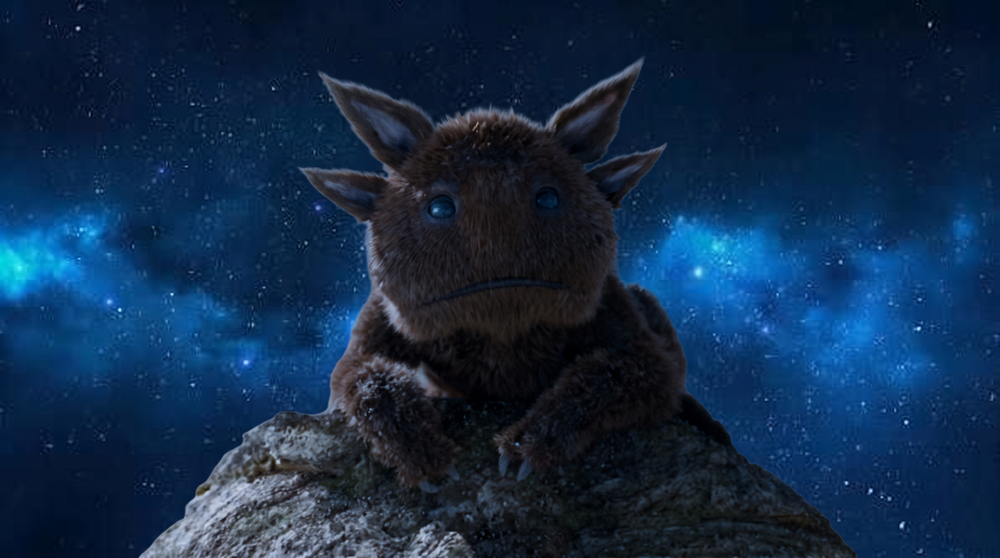

HÉROES RELACIONADOS

ORIGEN BIOLÓGICO
F'SNEAK HÍBRIDO PELUDO
*Ruidos de criatura alienígena masticando alegremente chatarra*
~ Blurp
B
Blurp es una adorable y voraz criatura perteneciente a la exótica especie cuadrúpeda F'sneak. Fue adoptado inicialmente por un Devastador de la facción Ravager antes de cruzarse de forma accidental en el camino del Soberano supremo Adam Warlock. Con su aspecto peludo, sus múltiples ojos saltones y una inocencia desbordante, Blurp logró ablandar el corazón de Warlock, convirtiéndose en su inseparable compañero y en la mascota oficial no oficial que viaja a bordo de la nave de la nueva facción de los Guardianes de la Galaxia.
PROCEDENCIA
SECTOR DEVASTADOR / ORGOCORP

UNIVERSO
MCU / MARVEL COMICS
MARVEL